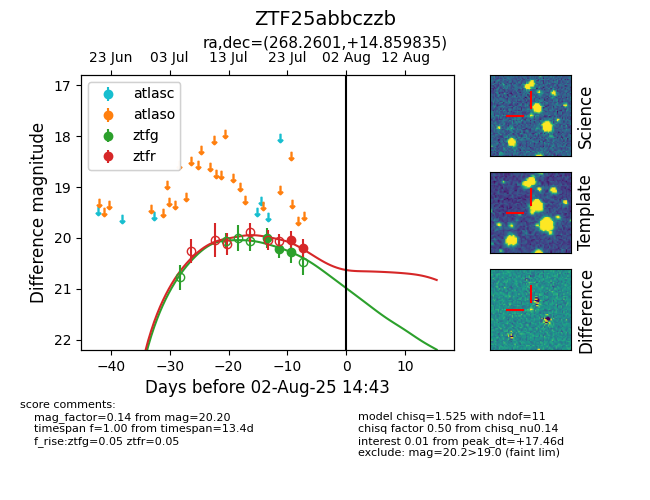

Target ZTF25abbczzb at 2025-08-02 14:43, see:
FINK: fink-portal.org/ZTF25abbczzb
Lasair: lasair-ztf.lsst.ac.uk/objects/ZTF25abbczzb
ALeRCE: alerce.online/object/ZTF25abbczzb
alt names
ZTF25abbczzb (ztf,fink)
coordinates:
equatorial (ra, dec) = (268.2601,+14.85983)
galactic (l, b) = (40.0710,+19.49755)
photometry
last ztfg=20.28, ztfr=20.20
3 ztfg, 2 ztfr detections
